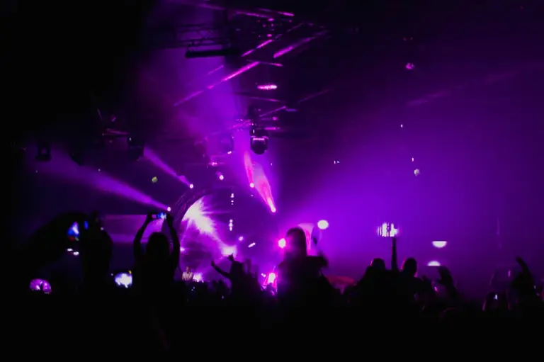

후원하기
아래 계좌로 후원하실 수 있습니다.
은행: 하나은행
계좌번호: 212-910016-02504
예금주 트루스코리아
후원에 대해 궁금하신 점은 전화(010-2705-5000)로 문의해 주세요.
3.5% 175만 명의 기적,
당신의 손으로!
소액주주운동으로 언론과 문화를 되찾아 자유를 수호합시다!
왜 소액주주운동인가?
대한민국은 자유와 민주주의라는 토대 위에 번영을 이루어왔습니다. 그러나 최근 언론과 문화계가 특정 이념에 의해 점차 장악되고 있습니다. 반미와 친북 성향을 띠는 일부 단체들이 사회적 담론을 왜곡하고, 자유로운 목소리를 억압하며, 심지어 김정은을 환영하는 피켓시위와 북한 체제를 옹호하는 움직임이 공공연히 나타나고 있습니다.
이러한 상황에서 자유대한민국을 지키기 위해서는 언론과 문화계를 되찾는 것이 시급합니다. 트루스국민주권은 영화, 언론, 음악 등 문화 전반이 좌편향적 흐름에 휩싸인 현실을 직시하며, 대한민국의 건국 이념과 자유민주주의의 가치를 굳건히 세우기 위해 문화전쟁의 최전선에서 사명을 다하고 있습니다.
소액주주운동은 국민 한 사람 한 사람이 힘을 모아 언론사와 문화산업의 주주가 되어 공정하고 자유로운 미디어를 만드는 실질적인 행동입니다. 단 3.5%, 약 175만 명의 국민이 동참한다면, 우리는 대한민국의 미래를 바꿀 수 있습니다!
TruthKorea국민주권 MISSION
-
공정한 언론
편향된 보도를 바로잡고, 진실과 균형을 추구하는 언론 환경을 조성합니다. 사실에 기반한 보도와 다양한 관점을 존중하는 미디어를 통해 국민의 알 권리를 지킵니다.
-
자유로운 문화
특정 이념에 치우치지 않는 연예계와 문화산업을 육성합니다. 창작자와 예술가가 자유롭게 표현할 수 있는 환경을 만들어 다양성과 창의성을 북돋웁니다.
-
국민의 힘
소액주주로서 국민이 직접 언론과 문화계의 변화를 주도합니다. 개인의 작은 힘이 모여 거대한 변화를 일으키는 국민 주도의 운동을 전개합니다.
-
건국 이념의 수호
자유민주주의와 시장경제의 가치를 재확립하며, 대한민국의 정체성을 강화합니다. 다음 세대가 자랑스러운 대한민국을 물려받을 수 있도록 문화적 기반을 다집니다.
영화 후원
<5월의 침묵>
유튜브에서 영상 보기 (다른 사이트)<5월의 침묵> 영화후원: 하나 212-910016-02504 트루스코리아
함께 만들어가는 미래
175만 명, 대한민국 인구의 단 3.5%가 손을 맞잡는다면, 우리는 언론과 문화계를 되찾아 자유와 진실이 살아 숨 쉬는 대한민국을 만들 수 있습니다.
당신의 참여가 그 시작입니다.